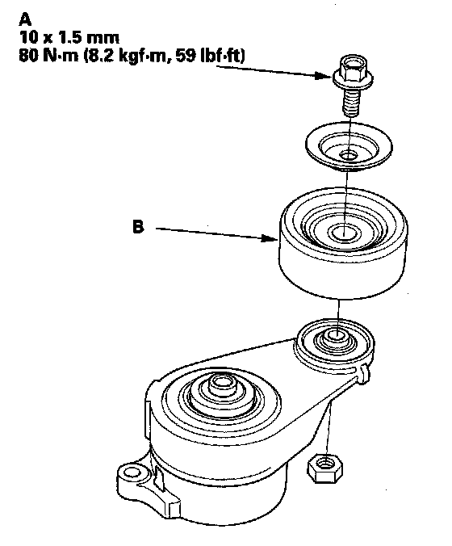

Operation CHARM
: Car repair manuals for everyone.
Home
>>
Acura
>>
2007
>>
MDX V6-3.7L
>>
Repair and Diagnosis
>>
Engine, Cooling and Exhaust
>>
Engine
>>
Drive Belts, Mounts, Brackets and Accessories
>>
Drive Belt Tensioner
>>
Service and Repair
>>
Tensioner Pulley Replacement
Tensioner Pulley Replacement
Tensioner Pulley Replacement
1.
Remove the auto-tensioner.

2.
Remove the pulley bolt (A) (left-hand threads), and remove the tensioner pulley (B).
3.
Install the tensioner pulley in the reverse order of removal.